这节我们将整合Spring Boot与Mongo DB实现增删改查的功能，并且实现序列递增。Mongo DB下载地址：https://www.mongodb.com/download-center/community。Mongo DB的基本介绍和增删改查的用法可以参考我之前的文章： MongoDB shell 、 MongoDB文档CUD 和 MongoDB 文档查询 。
新建一个Spring Boot项目，版本为2.1.3.RELEASE，并引入如下依赖：
1 | <dependency> |
然后可以通过Mongo Shell或者Mongo Compass工具创建一个名称为testdb的数据库，并新增user文档（文档，类似与关系型数据库里的数据表）：
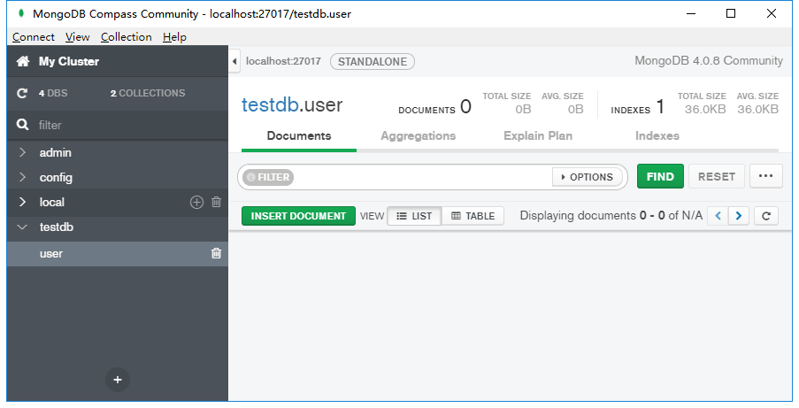
在配置文件application.yml里配置Mongo DB：
1 | spring: |
Mongo DB的默认端口为27017，使用的数据库为刚刚创建的testdb。
创建User实体类：
1 | (collection = "user") |
@Document(collection = "user")表明这是一个文档对象，名称为user，对应Mongo DB里的user表。@Id标注主键字段，String类型的主键值在插入的时候Mongo DB会帮我们自动生成。如果对象中的某个属性为非表字段，可以使用注解@Transient进行排除。
准备好这些后，我们开始编写一些简单的增删改查样例。
简单增删改查
创建一个UserDao接口：
1 |
|
接口继承自MongoRepository，泛型分别为实体对象和主键类型。通过继承MongoRepository，UserDao包含了一些增删改查的方法，如下图所示：
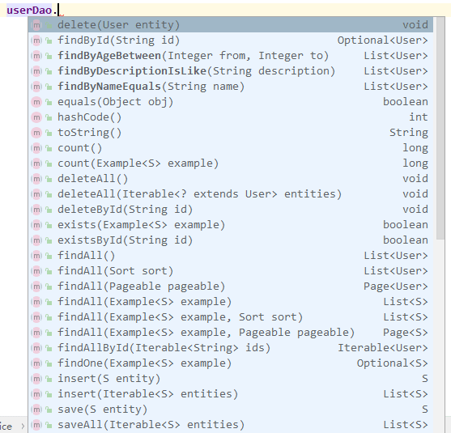
接着编写UserService，为了方便这里不再编写接口：
1 |
|
上面我们编写了基本的增删改查样例，新增和修改都是通过save方法完成的，当主键存在时则为修改，主键不存在则为新增。
最后编写一个RESTful的UserController（为了方便，没有对参数进行校验）：
1 |
|
启动项目，使用postman来测试接口的可用性。
测试新增用户：
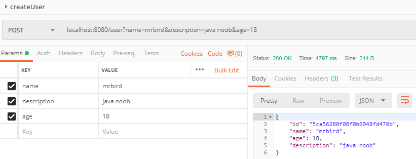
新增成功，查看数据库：
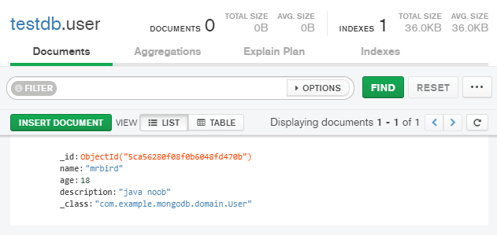
测试查询用户：
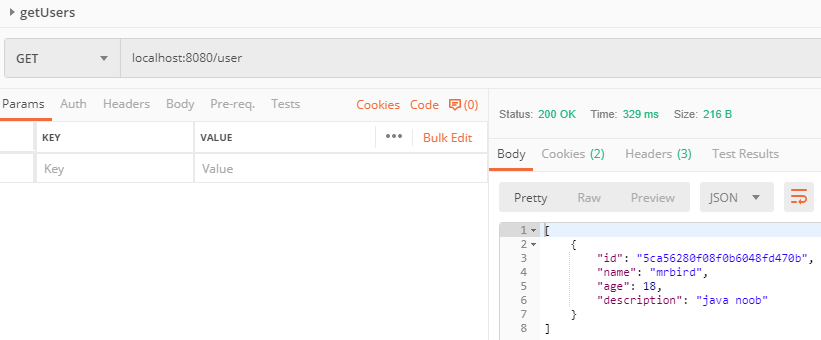
查询成功。
测试通过用ID查找用户：
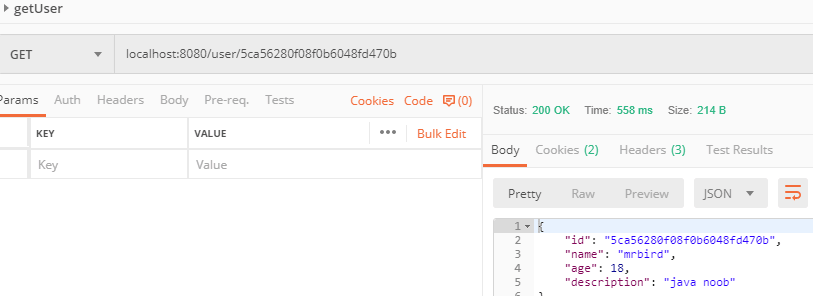
更新用户：
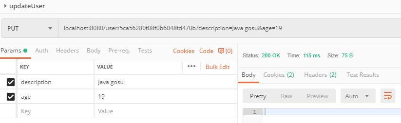
查看数据库是否更新成功：
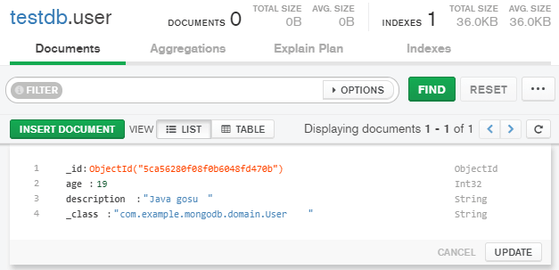
更新成功。
最后测试通过用户ID删除用户：
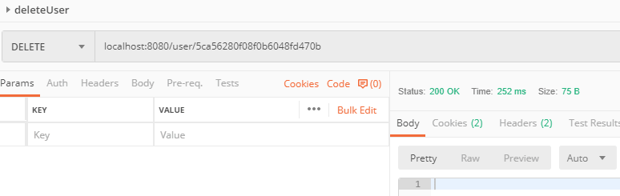
返回状态码200，删除成功。
查看数据库，删除成功：
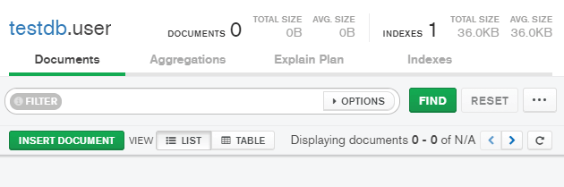
多条件查询
其实UserDao通过继承MongoRepository已经具有了JPA的特性，我们可以通过方法名来构建多查询条件的SQL。比如通过用户的年龄段来查询：
1 |
|
在输入findBy后，IDEA会根据实体对象的属性和SQL的各种关键字自动组合提示：
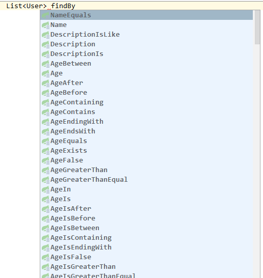
比如再在创建一个通过年龄段，用户名和描述（模糊查询）查询用户的方法：
1 | /** |
方法参数个数需要和方法名中所需要的参数个数对应上。
排序与分页
排序和分页需要使用MongoTemplate对象来完成，在UserService里新增一个getUserByCondition方法：
1 |
|
size表示每页显示的条数，page表示当前页码数，0表示第一页。上面的方法通过name和description（模糊查询）来查询用户分页信息，并且查询结果使用age字段降序排序。方法返回Page对象。
在UserController里添加：
1 | ("/condition") |
重启项目，我们往数据库里多加几条数据：
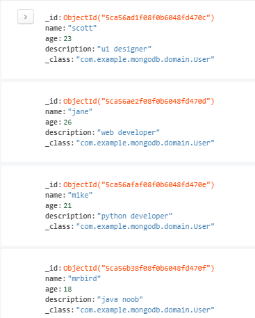
获取第1页数据，每页显示10条：
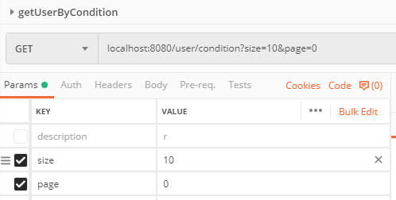
返回数据：
1 | { |
剩下可以自己测试。
postman测试样例及源码链接：https://github.com/wuyouzhuguli/SpringAll/tree/master/56.Spring-Boot-MongoDB-crud